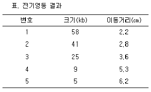
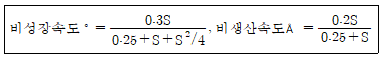
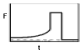
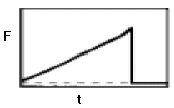
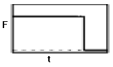
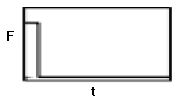

바이오화학제품제조기사 (2005-05-29 기출문제)
1과목: 미생물공학
1. 생장에 필요한 에너지를 호기성 호흡이나 발효에 의해 얻으며, 생합성과정에서 산소를 꼭 필요로 하지 않는 균은?
- 절대호기성균
- 미호기성균
- 통성호기성균
- 내산소혐기성균
(정답률: 73%)

2. 인간 또는 동물의 조직으로부터 보통 얻어지는 물질이나 재조합 미생물로부터 생산할 수 있는 물질이 아닌 것은?
- Human growth hormone
- Insulin
- Interferon
- Lovastatin
(정답률: 알수없음)
3. Lactobacillus delbrueckii는 어떤 조건하에서 헤테로젖산 발효(hetero-fermentatative lactic acid production)를 한다고 알려져 있다. 공급된 포도당이 모두 젖산발효에만 사용된다고 했을 때, 100 g의 포도당으로부터 기대되는 젖산의 양은 얼마인가? (단, 포도당 분자량: 180, 젖산분자량: 90)
- 190g
- 100g
- 50g
- 40g
(정답률: 90%)
4. 포도당으로부터 Clostridium acetobutylicum 에 의해서 생산되지 않는 물질은?
- acetone
- isopropanol
- butanol
- ethanol
(정답률: 70%)
5. 중합효소연쇄반응(polymerase chain reaction, PCR)을 이용하여 어떤 DNA를 복제하는데 1분이 걸린다. 5분 동안 복제하면 몇 개의 분자가 되겠는가?
- 4
- 8
- 16
- 32
(정답률: 알수없음)
6. 전통적인 활성오니법은 다음 어느 배양기 형태에 해당하는가?
- 회분식(batch)
- 유가식(fed-batch)
- 연속흐름반응기(CSTR)
- 순환식 연속흐름반응기(CSTR with recycle)
(정답률: 54%)
7. Aspergillus oryzae로부터 α-amylase를 생산하는 배지를 고안하기 위하여, 여러 가지 질소원에 대해 생산성을 시험한 결과, 무기 질소원보다는 유기 질소원이 양호한 것으로 나타났다. 다음 중 적당한 질소원이 아닌 것은?
- 카제인 분해물(casein hydrolysate)
- 주석산암모늄(ammonium tartarate)
- 펩톤(peptone)
- 옥수수시럽(corn syrup)
(정답률: 60%)
8. 다음 중 식초용 초산(acetic acid) 발효의 상업적인 생산에 이용되고 있는 방법은?
- 적하식 발효법(trickling generator)
- 미생물 고정화법(whole cell immobilization)
- 표면발효법(surface culture)
- 연속발효법(continuous culture)
(정답률: 알수없음)
9. 질소화합물중 일부가 지하수에서 검출되었다. 다음중 어떤 화합물이 주로 검출되면 지하수가 최근에 분뇨등에 오염된 것을 나타내는가?
- 질산성 질소
- 아질산성 질소
- 암모니아성 질소
- 이산화 질소
(정답률: 알수없음)
10. 재조합 단백질 생산의 숙주세포로서 대장균 보다 효모가 유리한 점이 아닌 것은?
- 고등세포와 유사한 세포구조를 가졌다.
- 생산된 단백질을 체외로 분비한다.
- 박테리오파지로부터 안전하다.
- 단백질 생산 속도가 빠르다.
(정답률: 67%)
11. 당을 기질로 하여 주로 젖산을 생산하는 정상(homo-fermentative) 젖산균이 아닌 것은?
- Bifidobacterium
- Lactobacillus
- Streptococcus
- Pediococcus
(정답률: 알수없음)
12. penicillin 합성과정에서 feedback regulation을 야기시키는 아미노산은?
- lysine
- cystein
- tryptophan
- valine
(정답률: 알수없음)
13. 효소의 생산에서 동물과 식물에 비하여 미생물을 이용하는 것이 장점이 아닌 것은?
- 대량 생산이 용이하기 때문이다.
- 원하는 효소의 탐색이 용이하다.
- 생산원가가 저렴하다.
- 식품 및 의료용으로의 사용이 용이하다.
(정답률: 알수없음)
14. 공업미생물의 변이를 위한 alkylating agent가 아닌 것은?
- Ethyl methanesulfonate(EMS)
- N-methyl-N'-nitro-N-nitrosoguanidine(NTG)
- Nitrous acid
- Dimethylsulfonate(DMS)
(정답률: 알수없음)
15. 회분배양(batch cultivation)시 나타나는 성장단계(growth phase)중, 성장속도(growth rate)와 사멸속도(death rate)가 서로 같은 단계는?
- 지연기(lag phase)
- 지수성장기(exponential phase)
- 정상기(stationary phase)
- 사멸기(death phase)
(정답률: 알수없음)
16. 가장 많은 종류의 항생물질을 생산하는 미생물 속은?
- Bacillus 속
- Cephalosporium 속
- Penicillium 속
- Streptomyces 속
(정답률: 알수없음)
17. 고체배지에서 잘 자라지 못하는 미생물의 cell concentration을 측정하는 방법은?
- viable cell counting method
- spectrophotometric measuring method
- most probable number method
- dry cell weight method
(정답률: 알수없음)
18. 다음 중 산업적으로 많이 사용되는 질소원은?
- 전분
- ethanol
- ammonium salt
- peptone
(정답률: 37%)
19. 크기를 알지 못하는 double strand DNA 절편을 전기영동한 결과 loading well로부터 4.4 cm 이동하였다. 이 전기영동에서는 크기를 알고 있는 여러 가지 double strand DNA 절편이 혼합된 시료도 동시에 전개하였으며 각각의 이동거리는 아래 표와 같았다. 이 미지의 절편의 크기는 얼마인가?

- 20.1 kb
- 18.6 kb
- 15.4 kb
- 13.8 kb
(정답률: 알수없음)
20. 소디움도데실설페이트-폴리아크릴아미드 겔 전기영동(Sodium dodecyl sulfate-polyacrylamide gel electrophoresis[SDA-PAGE])에 대한 다음 설명 중 틀린 것은?(오류 신고가 접수된 문제입니다. 반드시 정답과 해설을 확인하시기 바랍니다.)
- 분리할 단백질의 크기가 작을수록 폴리아크릴아미드의 농도를 높인다.
- SDS는 단백질을 선형으로 바꾸어 주는 역할을 한다.
- 단백질은 단백질 고유의 전하량 차이에 따라 서로 분리된다.
- 겔의 각 밴드(band)에 단백질의 농도가 낮을 경우에는 쿠마지 염색(Coomassie staining) 대신 은 염색(silver staining)을 이용한다.
(정답률: 47%)
2과목: 배양공학
21. 현탁 세포배양과 비교할 때 고정화(immobilized) 세포배양의 장점이 아닌 것은?
- 고정화 세포배양에서는 높은 세포농도를 유지할 수 있다.
- 고정화 세포는 재사용할 수 있고 세포회수와 세포 재순환 공정에 드는 비용이 절약된다.
- 고정화 세포배양에서는 높은 희석속도(dilution rate) 에서 세포가 세출(washout)되지 않는다.
- 고정화 세포로의 영양성분의 이동이 확산에 의존하기 때문에 세포 생장 및 산물 생산성이 우수하다.
(정답률: 64%)
22. 식물세포 배양을 통하여 생산되는 이차대사산물에 대한 설명 중 맞지 않는 것은?
- 식물의 방어 메카니즘(self defence mechanism)의 산물이다.
- 대부분 세포독성(cytotoxic)을 지닌 물질이다.
- 세포에서 생성되지만 액포에 축적되지 못하고 배지로 분비(secretion) 된다.
- 항생제, 항암제 등으로 이용될 수 있는 유용물질이다.
(정답률: 73%)
23. 공기부양식 생물반응기(airlift bioreactor)의 특징이 아닌 것은?
- 탱크교반형 생물반응기보다 운전비용이 많이 든다.
- internal loop 또는 external loop 형식이 있다.
- 전단응력 발생이 탱크교반형 생물반응기보다 낮다.
- 대규모화(scale-up)에 한계가 있다.
(정답률: 알수없음)
24. 유가식 배양에서 세포의 비성장 속도와 비생산 속도가 다음과 같이 표현될 때 적합한 유량의 형태는?





(정답률: 알수없음)
25. 일반 세포구성 원소 중 가장 많은 질량을 차지하는 영양 원소는?
- 수소
- 산소
- 탄소
- 질소
(정답률: 알수없음)
26. 하이브리도마 세포에 대한 설명 중 틀린 것은?
- 단일군 항체를 생산하는데 사용된다.
- 생장의 연속성과 불멸성이 특징이다.
- HAT 배지에서는 생존할 수 없다.
- B 림프구와 골수종 세포를 융합시킨 것이다.
(정답률: 50%)
27. 발효의 생산성에 영향을 주는 인자 중에 접종세포의 상태는 매우 중요하다. 일반적으로 접종세포의 상태는 어떤 것이 좋은가?
- 지체기 (lag phase)에 있는 세포
- 대수기 초기에 있는 세포
- 대수기 중기에 있는 세포
- 정지기에 있는 세포
(정답률: 60%)
28. 동물세포 배양에 사용되는 배지에 대한 설명 중 틀린 것은?
- 배지의 pH는 대부분 이산화탄소와 중탄산나트륨의 완충용액을 사용하여 조절한다.
- 배지의 질소원으로는 아미노산과 핵산이 첨가된다.
- 동물세포는 삼투압에 민감하므로 염의 농도 조절이 필요하고 500 mOs 정도의 삼투압을 유지한다.
- 비타민, 호르몬, 성장인자 등이 필수적인 성분이므로 혈청이나 각각의 성분을 첨가한다.
(정답률: 알수없음)
29. 다음 중 진핵세포에만 존재하는 세포 구조는?
- 미토콘드리아
- 편모
- 포자
- 세포벽
(정답률: 92%)
30. 비생장 관련 산물의 생산시 유용한 생산배지를 사용하기에 적절한 배양법은?
- 유가식 배양
- 연속식 배양
- 회분식 배양
- 2단계 배양
(정답률: 37%)
31. 일반적인 박테리아를 영양소가 제한되지 않은 정상적인 조건에서 배양하였다. 1g의 질소를 소모하였을 때 예측할 수 있는 세포의 건조무게는? (단, 세포내 단백질 함량은 세포 건조무게의 70%이고, 단백질내 질소함량은 15∼17% 이다.)
- 2∼5g
- 8∼15g
- 20∼30g
- 예측할 수 없다.
(정답률: 알수없음)
32. TCA 회로의 주요 역할이 아닌 것은?
- 생합성과 전자전달계에 필요한 전자(NADH)의 생성
- NAD와 생합성에 필요한 ATP를 재생 또는 생성
- 탄소계 골격물질의 공급
- 에너지의 발생
(정답률: 73%)
33. 재조합 미생물의 배양시 재조합 단백질의 발현을 유도할 수 있는 방법이 잘못 짝지어진 것은?
- λPL promotor - 온도 증가 (30℃ -> 42℃)
- tac promotor - IPTG, galactose 첨가
- trp promotor - 트립토판 첨가
- gal promotor - 갈락토즈 첨가
(정답률: 91%)
34. 이상적인 키모스탯에 대한 설명으로 틀린 것은?
- 이상적인 키모스탯은 완전히 혼합되는 연속 교반탱크 반응기(CSTR)와 같다.
- 반응기의 액체부피는 일정하게 유지된다.
- 세포는 생장속도에 비해 낮은 속도로 반응기로부터 제거되어야 한다.
- 희석속도가 최대 생장속도보다도 클 경우 세출(washout)현상이 일어난다.
(정답률: 알수없음)
35. 식물세포 현탁배양시 중성수지(neutral resin)을 첨가하여 세포 산물의 생산을 증가시킬 수 있다. 이러한 현상에 대한 설명 중 옳지 않은 것은?
- 생산물의 제자리 제거(in situ removal) 효과이다.
- 중성수지의 기능성 이온단에 의한 세포의 생장 촉진 효과이다.
- 되먹임 저해(feedback inhibition)의 경감에 의하여 산물 생산이 증대되었다.
- 일명 2상배양(two-phase culture)이라고 한다.
(정답률: 알수없음)
36. 효모를 재조합 단백질의 숙주세포로 사용할 경우 장점을 잘 설명한 것이 아닌 것은?
- 효모는 병원성이 없으므로 대량생산시 비교적 안전 하다.
- 발현된 단백질에 post-translation modification 과정에서 당분자를 부착시키는 기능을 가지고있다.
- 효모는 진핵생물이므로 진핵생물 유래의 외래단백질을 발현시키는데 유리하다.
- 효모는 에탄올을 생산하므로 재조합 단백질을 생산하는데 유리하다.
(정답률: 70%)
37. 기질 제한 생장시 세포의 비생장속도가 최대생장속도로 유지될 수 있는 조건은? (단, S는 기질농도이고, Ks는 모노드식에서의 상수이다.)
- S ≪ Ks
- S ≫ Ks
- S = Ks
- S = 0.5Ks
(정답률: 39%)
38. 이 생물이 monod식을 따른다고 가정할 때 여기서 - μmax=0.8hr-1, Ks=7g/L이다. - dCx/dt=(μmax·Cs·Cx)/(Ks+Cs) 정상상태 CSTR 발효조에서 도입흐름 유속과 기질 농도는 100L/hr와 70g/L이고, 유출류의 기질 농도는 10g/L이다. 발효조의 크기는 얼마인가?
- 213L
- 2⑤L
- 195
- 183L
(정답률: 알수없음)
39. 산소는 호기성 배양에서 주요한 기질의 하나이다. 배양액중의 용존산소에 관한 설명 중 틀린 것은?
- 임계산소농도란 미생물의 호흡이 제한 받기 시작하는 농도를 의미한다.
- 발효액에 용존산소를 원활히 공급하기 위해 스파징(sparging) 및 교반을 한다.
- 포화 용존산소 농도는 가스산소분압의 제곱에 비례한다.
- 아황산염법에서는 용존산소농도를 측정함에 의해 산소 전달속도를 측정할 수 있다.
(정답률: 알수없음)
40. 다음 중 외부의 유전자를 어떤 특정한 포유동물세포에 소개하여 넣기 위해 주로 사용되는 방법이 아닌 것은?
- Calcium phosphate transfection
- DEAE-dextran transfection
- Liposome-mediated transfection
- Heat shock transfection
(정답률: 50%)
3과목: 생물반응공학
41. 다음 발효기에 관련된 내용 중 옳지 않은 것은?
- 발효기의 탐침 설치시 작은 구멍은 평평한 가스켓으로 새는 것을 방지하며, 큰 구멍에는 O-링을 사용 한다.
- 큰 발효기는 보통 열제거를 위한 내부 코일이나 자켓이 있는 용기를 사용한다.
- 발효기는 삼상(고체, 액체, 기체)반응과 관련있다.
- 교반탱크 발효기는 기체전달에 있어 높은 부피물질 전달계수(kLa)를 갖는다.
(정답률: 60%)
42. 액중발효에 대한 고상발효의 장점이 아닌 것은?
- 반응기의 작은 부피에서 오는 시설비의 절감
- 낮은 수분 함량으로 인한 낮은 오염가능성
- 반응기의 제어가 용이
- 생성물의 분리 용이
(정답률: 42%)
43. 목적 재조합 단백질 생산을 위하여 유전자의 안정성을 고려한 배양기는?
- 플러그 흐름 배양기
- 터비도스탯
- 유가식 배양
- 다단 키모스탯
(정답률: 알수없음)
44. 대부분의 효소는 불활성화 될 경우 효소구조의 풀림현상이 일어난다. 이러한 효소 불활성화 과정의 활성엔트로피값의 변화는?
- 변화없다.
- 감소한다
- 증가한다
- 불활성화 온도에 따라서 다르다.
(정답률: 37%)
45. 발효조의 대규모화(scale-up)에 대한 설명으로 옳지 않은 것은?
- 단위체적당 일정한 동력을 투입하는 조건으로 대규모화 하는 경우 N3D2 값이 일정하게 유지되어야 한다. (단 N: 임펠러의 단위시간당 회전수, D: 발효조의 직경)
- 부피산소전달계수 kLa의 값이 일정하도록 대규모화 하면 일반적으로 발효조 단위부피당 투입되는 동력의 크기가 커져야 한다.
- shear rate를 일정하게 유지하도록 대규모화 하는 경우 임펠러의 tip speed의 제곱이 일정하게 되도록 하여야 한다.
- 순환시간이 같도록 대규모화 하는 경우 큰 탱크에서의 동력은 작은 탱크에서의 동력보다 큰 값이 소요된다.
(정답률: 46%)
46. 여러가지 배양 형태 중에서 세포농도를 일정하게 유지하기 위하여 희석속도를 변화시키는 조작을 통해 특정성질을 갖는 단일균주를 선별할 때 주로 쓰이는 것은?
- 터비도스탯(turbiostat) 배양
- 회분식 배양
- 고정화 배양
- 유가식(fed-batch) 배양
(정답률: 알수없음)
47. 효소의 pH-활성에 관한 설명 중 옳은 것은?
- 효소활성은 pH와 상관없이 일정하다.
- 효소의 활성은 최적 pH에서 최고를 나타내며 이에서 벗어나면 점점 줄어드는 경향을 나타낸다.
- 효소가 작용하는 pH의 범위는 4‾이며 이를 벗어나면 활성이 없다.
- 사람의 위에서 분비되는 소화효소 펩신의 적정 pH는 7 근처이다.
(정답률: 알수없음)
48. 연속식발효는 회분식 발효에 비해 생산성은 높으나 최종농도는 낮다. 반면 유가배양식(fed-batch)은 높은 최종 농도를 얻을 수 있다. 다음 중 아주 높은 생산성과 상당히 높은 최종 농도를 얻을 수 있는 생물반응기는?
- 세포 재순환 반응기
- 유가배양식
- 회분식
- 연속식
(정답률: 알수없음)
49. 이중생장(diauxic growth)에 대한 설명 중 틀린 것은?
- 세포가 두 가지 탄소원 존재하에서 성장할 때, 선호되는 탄소원이 먼저 소모된다.
- 일반적으로 이중생장을 하는 세포는 배양 중간에 정체기를 나타낸다.
- 이중생장은 이화억제작용과 밀접한 연관이 있다.
- 이중생장 현상은 회분식 배양에서는 나타나지 않는다.
(정답률: 알수없음)
50. 어떤 강물의 BOD가 6ppm 이라고 할 때 이에 대한 설명 중 가장 옳은 것은?
- 유기물의 양이 6mg/L 있다는 것이다.
- 강물 속에 녹아 있는 유기물을 5일 동안에 분해하는 데 소모되는 산소량을 나타낸다.
- 포화 산소량을 8mg/L 이라고 할 때 물고기가 호흡하는데 사용할 수 있는 산소량은 2mg/L 정도이다.
- 유기물은 강물속에서 미생물이 있어야만 분해가 가능하다. 따라서 분해되지 않고 있으므로 물고기가 생존하는데는 크게 지장이 없다.
(정답률: 알수없음)
51. 회분식 배양의 지수성장기에 있는 어떤 미생물의 비성장속도를 측정하였더니, 0.35 hr-1 로 나타났다. 이 미생물의 배가시간(doubling time)은 얼마인가? (단, ln2는 0.7로 한다.)
- 0.5 hr
- 2 hr
- 0.25 hr
- 4 hr
(정답률: 82%)
52. 다음 중 산소전달속도를 나타내는 부피전달계수(kLa)를 측정하는 방법이 아닌 것은?
- 정상상태법
- 비정상상태법
- 아황산염법
- 질산염법
(정답률: 70%)
53. 유가식 발효에 대한 내용으로 옳은 것은?
- 발효액의 점도가 높게 유지되므로, 혼합(mixing)을 잘해줘야 한다.
- 세포 성장에 대한 기질 저해가 없는 물질만을 기질로 사용하여야 한다.
- 오염문제, 돌연변이 문제, 플라스미드 불안정 문제 등에 있어서 연속발효에 비해 장점이 있다.
- 계속적으로 높은 배지 공급속도를 유지하면, 2차 대사물질(secondary metaabolite) 생산에도 사용될 수 있다.
(정답률: 50%)
54. 고정화된 효소에 있어 확산저항이 효소반응속도에 미치는 영향을 대표하는 무차원 변수는?
- 레이놀즈 수 (Reynolds number)
- 담콜러 수 (Damkoehler number)
- 페크릿 수 (Peclet number)
- 스트롤 수 (Strouhal number)
(정답률: 알수없음)
55. 발효기의 대규모화에 있어서 발효기의 높이에 대한 지름의 비가 일정하게 유지될 경우 부피에 대한 표면적의 비는 대규모화되는 동안 어떻게 변화하는가?
- 감소한다.
- 증가한다.
- 일정하다.
- 감소하다가 증가한다.
(정답률: 73%)
56. Michaelis-Menten 속도식의 계수를 구하는 데 이용되는 Eadie-Hofstee도표의 x축과 y축은? (단, V는 효소반응의 산물생성속도이며 [S]는 기질의 농도 이다.)
- x축은 1/[S], y축은 1/V
- x축은 V, y축은 V/[S]
- x축은 [S], y축은 [S]/V
- x축은 V/[S], y축은 V
(정답률: 알수없음)
57. 유기물은 혐기성 소화시 유기산을 거쳐 메탄과 탄산가스로 변한다고 한다. 초산이 분해되는 경우 메탄/탄산가스의 몰비는?
- 2
- 0.5
- 1
- 4
(정답률: 알수없음)
58. 다음 설명 중 옳지 않은 것은?
- 대규모화(Scale-up)은 이동현상에 관계된다.
- 대규모화시 기하학적 유사성이 유지되더라도 큰 발효기의 물리적 조건이 작은 발효기와 완전히 같아질 수 는 없다.
- 배양의 대사 반응이 규모에 따라 달라지지는 않는다.
- 전통적인 대규모화는 매우 경험적이다.
(정답률: 70%)
59. 미생물은 dx/dt=μx의 식을 따라 증식한다. 20분만에 세포의 수가 2배가 되는 대장균의 비성장속도 μ는 얼마인가?
- 2.1 h-1
- 2.1 min-1
- 1.0 h-1
- 1.0 min-1
(정답률: 알수없음)
60. 배양계의 산소수지 축차모델에서 미생물 반응계에서는 기액 계면 근방에서의 산소소비는 작기 때문에 일단 산소가 물리적으로 흡수된 후에 액 본체에서 소비된다고 했을 때 축차(순차)적인 경우 산소의 경로는?
- 기체본체 → 가스경막 → 액 본체→ 액 경막 → 미생물 세포외경막 → 미생물 세포내에서의 생화학 반응
- 기체본체 → 가스경막 → 액 경막→ 액 본체 → 미생물 세포 외경막 → 미생물 세포내에서의 생화학 반응
- 기체본체 → 가스경막 → 액 본체→ 액경 막 → 미생물 세포내에서의 생화학 반응 → 미생물 세포 외경막
- 기체본체 → 가스경막 → 액 경막→ 액 본체 → 미생물 세포내에서의 생화학 반응 → 미생물 세포 외경막
(정답률: 알수없음)
4과목: 생물분리공학
61. 2M의 KCl 2L를 4M의 NaNO3 1L에 섞었을 때 몇 mol만큼의 KNO3가 침전될 것인가? (단, KCl의 용해도적(solubility product)은 10(mol/liter)2이고, KNO3는 1.7(mol/liter)2이며, NaNO3는 100 (mol/liter)2이다.)
- 0.09
- 0.9
- 1.5
- 1.9
(정답률: 알수없음)
62. 세포내 용질농도 0.3 M인 세포를 삼투압 충격법을 이용하여 분쇄하려한다. 세포와 물사이의 삼투압은 몇 기압인가? (단, 온도는 12℃이고 기체상수 R= 82 cm3·atm/gmole·K이다.)
- 1
- 3
- 7
- 10
(정답률: 알수없음)
63. 생물반응과 분리의 동시공정의 장점에 속하지 않는 것은?
- 기질저해의 제거
- 생성물 저해의 감소
- 반응수율의 증가
- 생성물의 변성 방지
(정답률: 알수없음)
64. 다음 중 CO2를 사용하며, 식품공업에서 활발히 사용되는 환경 친화적인 분리기술은?
- 이온교환 크로마토그래피
- 막분리
- 초임계 추출
- 액-액 추출
(정답률: 알수없음)
65. 차단되는 입자의 크기가 작은 순서로 나열된 것은?
- 한외여과 < 미세여과 < 역삼투
- 역삼투 < 한외여과 < 미세여과
- 미세여과 < 한외여과 < 역삼투
- 역삼투 < 미세여과 < 한외여과
(정답률: 91%)
66. 다음중 총 단백질 정량방법이 아닌 것은?
- HPLC
- Lowry
- Biuret
- UV
(정답률: 알수없음)
67. 동시생물반응과 일반적인 회수기술에 속하지 않는 것은?
- 진공 발효법
- 젤(gel)여과 크로마토그래피법
- 고체흡착제 첨가법
- 액체추출제 첨가법
(정답률: 59%)
68. 원심분리공정에서 침강 속도를 설명한 것은 다음 중 어느 것인가?
- 입자 직경에 비례한다.
- 점도에 비례한다.
- 원심력에 비례한다.
- 입자 직경의 자승에 반비례한다.
(정답률: 82%)
69. 분리공정을 평형공정(equilibrium process)과 속도공정 (rate-controlled process)으로 분류할 때 다음 중 평형 공정에 속하는 것은?
- 전기영동
- 한외여과
- 젤여과 크로마토그래피
- 침전
(정답률: 50%)
70. 다음 중 지방질(lipid)의 일반적 분자구조로서 옳은 것은?
- (CH2O)n
- CH3-(CH2)n-OH
- CH3-(CHOCH)n-COOH
- CH3-(CH2)n-COOH
(정답률: 알수없음)
71. 다음중 가장 낮은 회전속도에서 원심분리할 수 있는 것은?
- DNA
- E. coli
- 바이러스
- S. cerevisiae
(정답률: 91%)
72. 생물 물질의 특성 설명 중 틀린 것은?
- 생산물은 수용성 배지에서 묽은 농도로 존재한다.
- 생산물은 열에 강하다.
- 분리해야 될 생산물이 다양하다.
- 생산물과 비슷한 물리, 화학적 특성을 갖는 불순물이 포함되어 있다.
(정답률: 84%)
73. E. coli 현탁액을 농축시키기 위해 bowl 원심분리기가 사용된다. bowl의 내경이 10cm이고 길이가 50cm 이며 각속도 는 1000 rad/sec 이다. 처리유량이 500cm3/sec 일 때 침 강속도는 몇 cm/sec인가?
- 1.56 X 10-1
- 1.56 X 10 -3
- 1.56 X 10 -5
- 1.56 X 10 -7
(정답률: 알수없음)
74. 이상적인 액체추출용매가 가져야 할 특성이 아닌 것은?
- 독성이 없어야 한다.
- 선택성이 있어야 한다.
- 비싸지 않아야 한다.
- 발효액과 섞여야 한다.
(정답률: 73%)
75. 투석에 의한 분리에 영향을 미치는 주요인자는?
- 크기
- 점도
- 밀도
- 용해도
(정답률: 73%)
76. 원핵세포와 진핵세포가 구별되는 구성물질은?
- 핵
- 핵막
- 세포질
- 라이보솜(Ribosome)
(정답률: 알수없음)
77. 발효액으로부터 효소를 분리하고 정제하는데 수반되는 주요 단계 중 맨 처음에 수행하여야 할 단계는?
- 세포, 불용성 입자 및 거대분자 같은 고체의 분리
- 생성물의 1차분리 또는 농축과 대부분의 수분 제거
- 오염화학물질의 정제 또는 제거
- 건조와 같은 생성물의 제조
(정답률: 알수없음)
78. 다음 중 발효공정에 관련된 내용으로 틀린 것은?
- 소포제가 추출공정에서 에멀션을 안정화시킬 수 있으므로 최소로 사용한다.
- pH 완충액보다는 단순한 산/염기를 사용하는 것이 바람직하다.
- 멸균을 하는데 있어 살균제는 열처리보다 바람직하다.
- 발효액 중 남은 기질이 최소가 되도록 하여야 한다.
(정답률: 47%)
79. 전기투석은 전기영동(electrophoresis)과 다음 중 어떤 분리 기술의 조합인가?
- 염석(salting out)
- 막분리
- 크로마토그래피
- 원심분리
(정답률: 77%)
80. 균의 성질을 이용한 분리법으로 짝지어 진 것은?
- 액체집적 배양, 한천평판 배양
- 액체집적 배양, 계대 배양
- 계대 배양, 한천평판 배양
- 액체집적 배양, 한천평판 배양, 계대 배양
(정답률: 70%)
5과목: 생물공학개론
81. 다음 HIV 바이러스에 관련된 내용중 틀린 것은?
- HIV는 2개의 동일한 RNA를 가지고 있다.
- HIV는 외피막과 당단백질 스파이크를 갖고 있다
- HIV는 특수한 꼬임을 가진 DNA 바이러스이다.
- HIV는 사람면역결핍 바이러스를 말한다.
(정답률: 50%)
82. 다음 세포분열과 관련된 내용 중 틀린 것은?
- 성장인자는 세포주기 조절계에 신호를 보낸다.
- 세포가 분열할 때 염색체는 복제된 후 둘로 나누어진다.
- 체세포 분열의 경우 두 번의 핵분열과 세포질 분열을 수반한다.
- 상동염색체는 서로 다른 유전자를 가지고 있다.
(정답률: 82%)
83. GMP의 3대 요소에 해당되지 않는 것은?
- 원료관리
- 인원관리
- 시설관리
- 생산관리
(정답률: 30%)
84. 폐수처리용 연속생물반응기에서 매일 1⑤ kg의 셀룰로오스(cellulose)와 분해세균 103 kg이 유입되어 104 kg의 셀룰로오스와 1.5 x 104 kg의 분해세균이 유출되고 있다. 세균의 셀룰로오스 분해속도는 5 x 104 kg/day 이고 분해세균의 증식속도와 사멸속도는 각각 2.5 x 104, 4.5 x 102kg/day 이다. 반응기내에 매일 축적되는 셀룰로오스와 세균의 총량은?
- 3x103 kg, 2.⑤x102 kg
- 4x104 kg, 1.06x104 kg
- 3x103 kg, 1.06x104 kg
- 4x104 kg, 2.⑤x102 kg
(정답률: 알수없음)
85. HPLC를 이용한 시료 분석 시 시료 전 처리 및 용매의 탈기(degassing)와 관계 없는 것은?
- 용매 내에 녹아 있는 기체(질소, 산소 등) 제거
- 시료 여과 후 형성되는 기포 제거
- 펌프 성능의 저하 및 머무름시간 재현성 문제
- 펌프의 초기화 문제
(정답률: 47%)
86. 단백질은 아미노산 곁가지에 많은 수의 약산성 그룹과 약염기성 그룹을 가지고 있다. 이들 그룹이 하는 역할이 아닌 것은?
- 다른 분자와 이온결합하는 역할
- 전기적 중성을 유지하는 역할
- pH 변화에 대한 완충작용 역할
- 다른 분자와 소수성 결합하는 역할
(정답률: 73%)
87. 의약품 제조에 있어서 validation(검증)과 관련된 설명 중 옳지 못한 것은?
- 의약품의 생산에 있어서 FDA의 승인을 받기 위해서는 공정, 시설과 설비, 분석의 세가지 모두가 정당함을 검증해야 한다
- 임상단계의 의약품과 대규모 생산된 제품의 약효 및 특성이 동일한 물질이라는 품질 보증의 개념이다.
- 공정, 설비, 재료, 시설에 대한 신뢰성을 GMP 규정에 따라 증명하는 행위이다.
- 의약품은 미국 FDA에 의한 승인을 받아야 해외에서 유통이 가능하므로 FDA에 의해 검증이 필수적이다.
(정답률: 59%)
88. 특정 질병의 진단 및 치료 등의 목적으로 사용될 수 있는 단일클론 항체(monoclonal antibody, mAb)의 생산에는 약1010~1012 개의 항체 유전자 재조합체 library로부터 항체 또는 항체 일부분을 bacterial virus등에서 발현시켜서 특정 항원(antigen)의 epitope에 강하고 효과적으로 결합할 수 있는 항체 또는 항체 일부분을 비교적 간편하게 발현·검색하는 기술은?
- phage display 기술
- viral DNA/RNA 유전자 분리기술
- hybridoma cell 제조 기술
- protein expression vector 제조 기술
(정답률: 31%)
89. 6%의 cell을 함유하고 있는 발효 슬러리를 120 kg/h로 주입하고 112 kg/h로 여과액(filtrate)을 방출하는 연속회전식 진공여과기(continuous rotary vacuum filter)에서 생성되는 필터 케이크 (filter cake)의 수분함량은?
- 4%
- 8%
- 10%
- 12%
(정답률: 24%)
90. 다음은 크로마토그래피의 분류 메카니즘에 따라 분류할 수 있으며 이들은 각각 정지상의 상태와 이동상의 상태로 분류할 수 있다. 이러한 분류 메카니즘으로 분류한 내용 중 상이 한 것은 무엇인가?
- GLC
- LSC
- LLC
- TLC
(정답률: 40%)
91. 고정화 세포 시스템에서 Damkoehler 수는 (최대 생변환속도)/(최대 확산속도)로 정의된다. Damkoehler 수가 1보다 훨씬 큰 경우가 의미하는 것은?
- 생산성이 매우 높다.
- 확산이 속도 결정단계이다.
- 반응속도가 속도 결정단계이다.
- bulk 용액이 turbulent flow이다.
(정답률: 알수없음)
92. 식물로부터 잘라낸 조직편을 적당한 조건 하에 두면 켈러스(callus)라고 하는 부정형의 세포 덩어리가 생성된다. 이 캘러스의 특징에 대해서 잘못 기술한 것은?
- 단단한 세포벽을 가지고 있다.
- 외력에 강하다.
- 세포의 크기가 크다
- 증식속도가 느리다.
(정답률: 알수없음)
93. 어떤 효소의 시간에 따른 활성저하가 아래의 1차식으로 나타내 진다.
a : 효소 활성, Unit kd : 불활성화 속도 상수, hr-1 kd의 값이 0.1 hr-1일 때, 효소활성이 초기값의 20%가 되는 시간은?
- 13.5 hr
- 15.1 hr
- 16.1 hr
- 17.3 hr
(정답률: 28%)
94. 다음은 단백질을 생물학적 기능에 따라 분류한 것이다. 이들 중 단백질의 예가 잘못된 것은?
- 구조단백질: 당단백질, 콜라겐
- 면역단백질: 항체. 트롬빈
- 촉매단백질: 헤모글로빈, 혈청알부민
- 조절단백질: 인슐린, 성장호르몬
(정답률: 알수없음)
95. 의약품제조와 관련된 KGMP에 대한 설명 중 틀린 것은?
- 불량의약품 생산으로 인한 약화를 미연에 방지하는 것도 목적의 하나이다.
- 엄격한 품질 관리를 통하여 의약품의 효능을 높이기 위한 관리기준이다.
- 소비자가 품질을 가릴 수 없으므로 KGMP는 제조업소에 서 관리해야 한다.
- 생명과 관련된 치료에 사용되는 의약품의 품질을 보증하기 위한 규정이다.
(정답률: 알수없음)
96. 원심분리에 의한 발효액으로부터의 세포회수는 원심력에 의한 세포의 침강을 이용하는 것이다. 원심분리 시 회전속도가 2배로 증가한다면 세포의 침강속도는 어느 정도로 증가하겠는가?
- 1.4 배
- 2 배
- 4 배
- 8 배
(정답률: 69%)
97. 금속원자를 불꽃 또는 전기로 등에 의하여 높은 온도로 가열함으로써 만들어진 기체 상태의 중성원자에 적당한 복사에너지를 쪼여 줌으로써 일어나는 복사에너지 흡수 현상을 기초 원리로 한 분석법은 무엇인가?
- Ultraviolet Spectroscopy
- Nuclear Magnetic Resonance Spectroscopy
- Infrared Spectroscopy
- Atomic Absorption Spectrometry
(정답률: 알수없음)
98. 유전자재조합 기술에서 외부 DNA 조각을 클론하기 위해 벡터를 사용한다. 이때 벡터가 지녀야 할 성질에 대해 잘못 설명한 것은?
- 대장균 내에서의 인위적인 복제가 용이
- 박테리아의 핵산물질로부터 벡터를 분리 및 정제할 수 있는 선택표시를 보유
- 벡터 DNA 부분에는 박테리아 내부에서 증식할 때 필요하지 않은 부분이 존재
- 숙주세포 속으로 쉽게 도입
(정답률: 알수없음)
99. 의약품 제조에 필요한 원료에 대한 원료 validation 방법으로 볼 수 없는 것은?
- 제품 batch를 제조하는데 필요한 모든 원료 목록을 작성한다.
- 각 원료에 대한 시장가격을 조사하고 가격변동을 예측한다.
- 원료 공급원이 새로운 회사로 변경된 경우 그 회사 생산시설을 방문한다.
- 안정된 공급을 위해 각 원료에 대한 공급자를 적어도 2개소 이상 확보한다.
(정답률: 알수없음)
100. 다음은 Polyacrylamide 젤을 이용하여 변성조건에서 전기영동을 하는 이유를 기술하였다. 이들 중 잘못 설명한 것은?
- 세포막과 같은 불용성의 생체물질을 변성유도체 혹은 계면활성제로 용해시켜 분해할 수 있음
- 여러 가지 성분으로 이루어져 있는 복합체(효소, ribosome, virus 등)를 해체시켜 분석 가능
- 당단백질은 SDS 등과 같은 강한 이온성 계면활성제를 사용하여 단백질의 분자량 측정 가능
- 단백질을 환원시켜 disulfide 결합을 끊어 구성 peptide의 조성을 알 수 있음
(정답률: 알수없음)